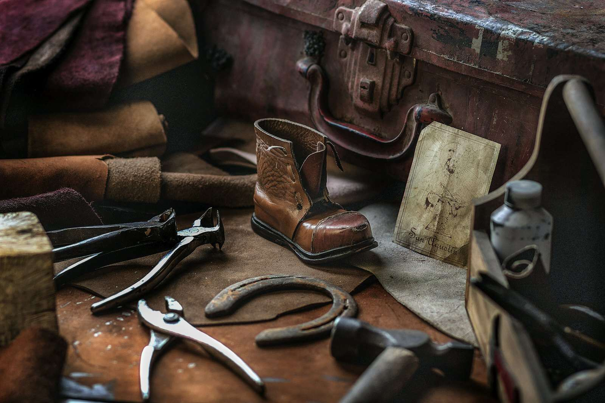

Shoe repairs · Darling St, Balmain
Send a photo. Get a quote.
No need to ring around first.
Heels, soles, stitching, zips and tired leather — handled by a traditional cobbler on Darling Street. Snap your shoes, tell us what's wrong, and get a price and turnaround back before you make the trip.

Start here
What are you bringing in?
Pick the pair. See what usually needs doing, what to photograph — then start a quote with it already filled in.
What usually comes in
Boots that have done the miles.
- Heels and soles worn down at the back or the ball
- Zips that stick, split or have lost teeth
- Welts or seams starting to open up
- Dried-out or salt-marked leather
Photograph the sole, the side and the zip — three photos tells the whole story.
Quote my bootsWhat usually comes in
Heels that click and wobble.
- Heel tips worn through to the nail
- A heel that has come loose or snapped
- Straps and buckles working loose
- A pair that pinches across the toes
A close-up of the heel tip shows exactly what it needs.
Quote my heelsWhat usually comes in
Good shoes worth keeping.
- Thin or holed leather soles — half sole or full resole
- Worn heels on the outside edge
- Stitching lifting around the toe
- Scuffs and faded colour that polish can bring back
Leather soles are best done before a hole goes through.
Quote my leather shoesWhat usually comes in
Sneakers coming apart.
- Soles separating from the upper at the toe or heel
- Worn heel lining rubbing through
- Small tears in the upper
Not every sneaker is worth repairing — a photo shows whether yours is.
Quote my sneakersWhat usually comes in
Leather that isn’t on your feet.
- Broken handles and shoulder straps
- Buckles, clasps and stitching
- Extra holes punched in a belt
- Zips on bags and jackets
Photograph the broken part up close, and the whole bag.
Quote my bags & belts